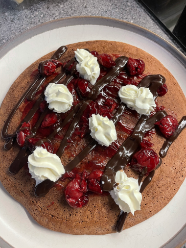
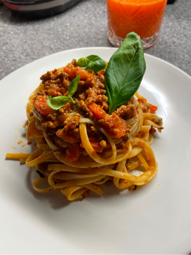
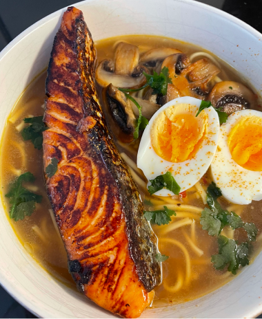

Justyna's Kitchen
Home
Contact
My ideas on how to eat everything
Not feeling guilty about it!
about me
my recipes
Chocolate and banana pancake
Ingredients:
1 banana
1 2 eggs
10g plain flour
1 scoop protein powder
10ml almond milk
20g cherry jam
chocolate sauce
whipped cream
How to prepare:
Blend all the ingredients together.
Pour the mixture into a frying pan adding some frylight before.
Fry on each side for 5 minutes.
Top with your favorite toppings

Serving: 1 person
Spaghetti bolognese
Ingredients:
100g pasta
300g turkey thigh mince
5ml olive oil
2 carrots
1 onion
tinned tomatoes
tomato pure
garlic
fresh basil
How to prepare:
Chop all the veggies and fry on olive oil.
Add turkey mince when you see veggies are soft, fry until gold.
Add tinned tomatoes and tomato pure and cook for an hour.
Cook your pasta.
Serve with fresh basil and cheese if you like.

Serving: 2 people
Salmon ramen
Ingredients:
1 serving of ramen noodles
200 ml chicken broth
1 tsp sesame oil
1 tsp fish sauce
1 tbsp soy sauce
fresh garlic
1 tbsp honey
mushrooms fried on butter
fresh coriander
1 salmon fillet
boiled egg
How to prepare:
Marinate salmon fillet in soy sauce, garlic and honey for at least 1 hour.
Cook your noodles as per instructions.
Warm chicken broth up.
Fry salmon fillet on each side for 5 minutes.
Boil the eggs.
Place everything into a bowl and top with coriander.

Serving: 1 person